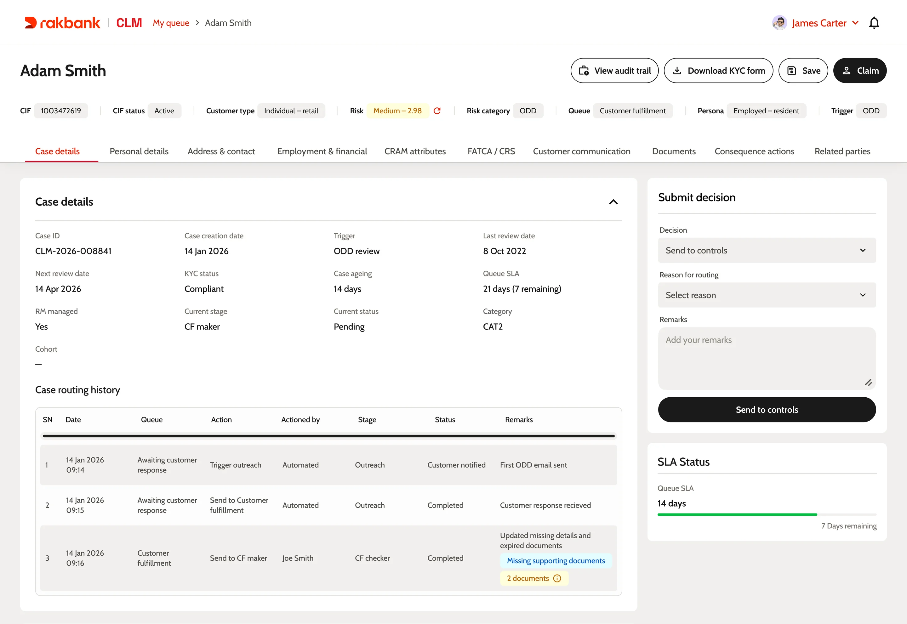
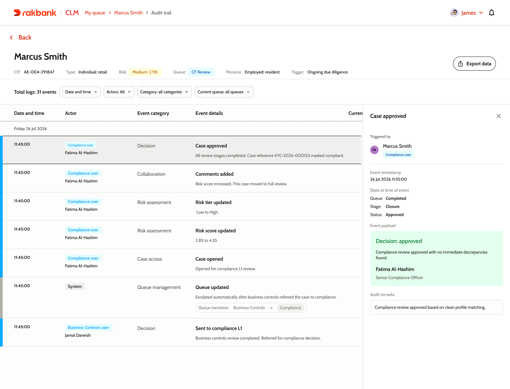
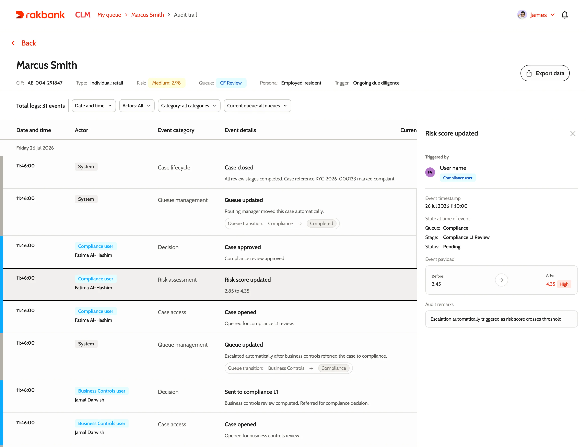
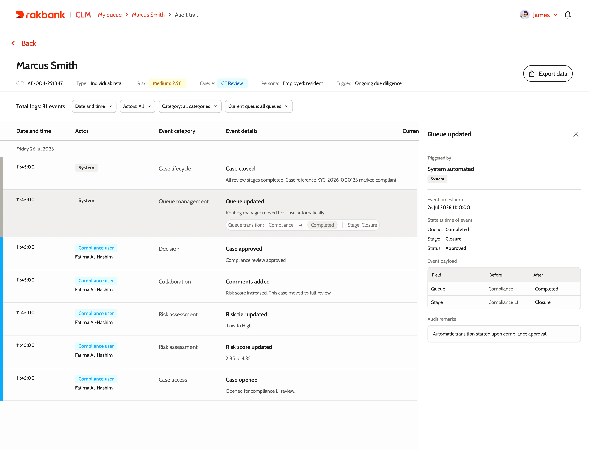
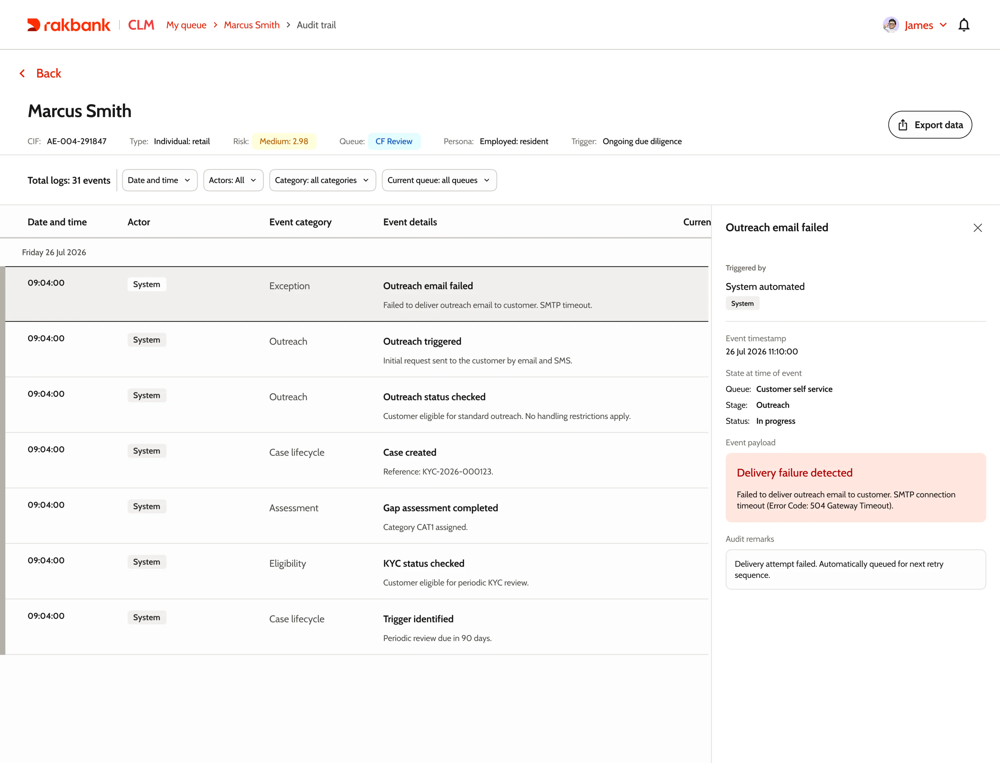
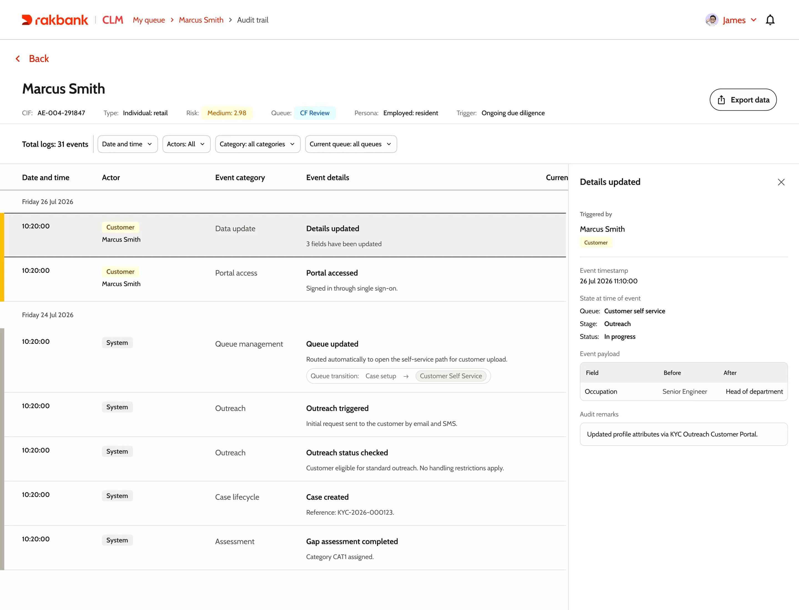

Designing for certainty
A deep dive into the audit trail I designed for RAKBANK's compliance platform.
Why
The hardest part of an audit was remembering
CLM is where RAKBANK's compliance reviews happen. Before it, the work lived in four places: the core banking system, the process engine, inboxes, and spreadsheets. Reviews got done. But when auditors asked why a decision was made, someone had to piece the answer together by hand. That could take days.
When I sat down with reviewers, I expected them to ask for speed. They didn't. Every conversation came back to the same fear: approving something they shouldn't have.
The feature
A record that writes itself as you work
That fear is what the audit trail is for. Not a log, but a story the case tells about itself, built while the work happens.
The obvious approach was to log everything silently. But a log tells you what happened, not why. The other extreme, asking people to justify every click, buries the record in noise. So I put the questions only where the decisions are: when someone routes a case, changes a risk score, or triggers a consequence, the panel asks for a short reason before it lets them through. Everything else records itself quietly in the background.

The feature
Three days, 31 events, one story
Here's a real case, replayed. A periodic review kicks off, the system emails the customer, they log in, fix their details, upload documents. A reviewer picks it up, hands it to business controls, compliance raises the risk, and a senior officer signs off. All of it lands on one timeline.
The colour on the edge tells you who acted before you read a word: grey for the system, blue for the bank, yellow for the customer. Need just the customer's side of the story? That's one filter.

Open any event and you get the same four answers: who did it, what the case looked like at that exact moment, what changed, and the reason they gave. That snapshot of the moment is what auditors care about most, not what the case looks like now, but what the reviewer could see when they made the call.

The heavier the decision, the richer the record. Here the officer raises the risk score from 2.85 to 4.35. The event keeps the old score, the new one, the tier jump from low to high, and why it happened.

The feature
Everything leaves a trace, even the failures
A case isn't shaped only by reviewers. The system moves it between queues. Outreach emails fail and get retried. The customer edits their own profile through the portal. The trail records all of it the same way, because to an auditor, a failed email matters as much as an approval.


When the customer updates their details, the trail shows every field, before and after, with the ones that matter for risk flagged.

What changed
Audits stopped being archaeology
Audit preparation went from days of digging to opening a panel. Because the record is built while the work happens, not assembled after the fact, it's the one version of events everyone trusts: reviewers, team leads, and the auditors they answer to.
Want to talk through the details?
Happy to walk through the decisions, the research, and what didn't make the cut.
Get in touch